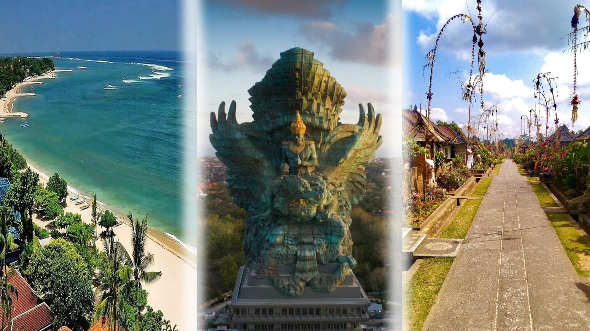

Bali dikenal sebagai pulau surgawi yang memadukan keindahan alam, budaya, dan spiritualitas dalam satu tempat.
Hamparan pantai berpasir putih, ombak yang menenangkan, sawah terasering yang hijau, serta atmosfer yang damai menjadikan Bali destinasi wisata kelas dunia.
Salah satu ikon megah yang tidak boleh dilewatkan adalah Garuda Wisnu Kencana (GWK) , sebuah taman budaya yang menampilkan patung raksasa Dewa Wisnu yang menunggangi Garuda.
Patung setinggi 121 meter ini menjadi salah satu yang tertinggi di dunia, menyimbolkan kebijaksanaan, keberanian, dan perlindungan.
Pengunjung dapat menikmati pemandangan spektakuler dari ketinggian, pertunjukan seni Bali, dan suasana budaya yang kental di area GWK.
Selain keindahan alam dan budayanya, Bali juga menawarkan beragam kuliner khas yang kaya rasa.
Makanan seperti Ayam Betutu , yang dimasak dengan rempah tradisional hingga meresap sempurna, menjadi favorit wisatawan.
Babi Guling dengan kulit renyah dan bumbu khas Bali menghadirkan cita rasa autentik yang kuat. Tak hanya itu, Sate Lilit , yang dibuat dari daging cincang berbumbu dan dililitkan pada batang sereh,
memberikan aroma dan rasa yang unik. Perpaduan budaya, alam, dan kuliner inilah yang menjadikan Bali tempat yang selalu dirindukan dan membuat setiap kunjungan terasa istimewa.
Fasilitas yang disediakan :
- Fasilitas : Hotel, transportasi wisata, guide profesional, konsumsi harian.
- Pantai Kuta, Desa Panglipuran, GWK (Garuda Wisnu Kencana).
- Pemandu wisata profesional.
- Makan 3x sehari.